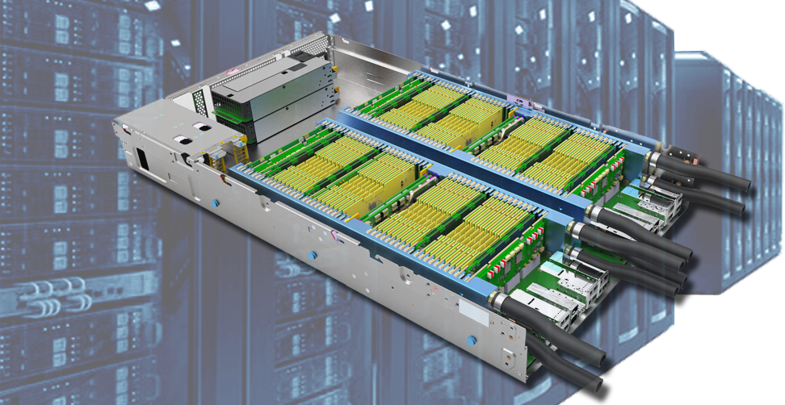

Welcome to cloudFPGA documentation!¶
This page is the documentation of cloudFPGA project.
Field programmable gate arrays (FPGAs) are making their way into data centers (DC). They serve to offload and accelerate service-oriented tasks such as web-page ranking, memory caching, deep learning, network encryption, video conversion and high-frequency trading.
However, FPGAs are not yet available at scale to general cloud users who want to accelerate their own workload processing. This puts the cloud deployment of compute-intensive workloads at a disadvantage compared with on-site infrastructure installations, where the performance and energy efficiency of FPGAs are increasingly being exploited.
cloudFPGA solves this issue by offering FPGAs as an IaaS resource to cloud users. Using the cloudFPGA system, users can rent FPGAs — similarly to renting VMs in the cloud — thus paving the way for large-scale utilization of FPGAs in DCs.
The cloudFPGA system is built on three main pillars:
the use of standalone network-attached FPGAs,
a hyperscale infrastructure for deploying the above FPGAs at large scale and in a cost-effective way,
an accelerator service that integrates and manages the standalone network-attached FPGAs in the cloud.
Contents: